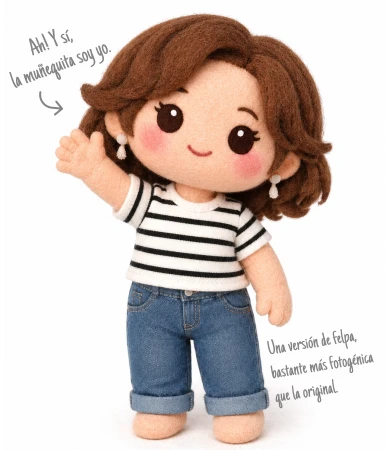
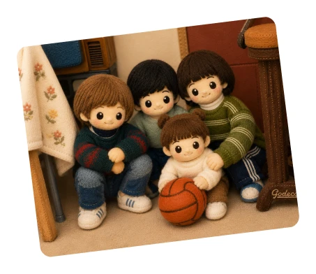
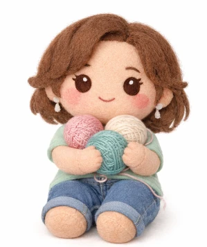

Si es fin de semana,
esta frío y gris. Sale
maratonear serie.
Buenas, soy Jes!
Acá vas a encontrar un poquito de las cosas que me gustan, las que me dan curiosidad y algunas otras que simplemente forman parte de mí.
Ah! Y sí, la muñequita soy yo.
Una versión de felpa, bastante más fotogénica que la original.


Soy la menor de cuatro hermanos y parte de mi infancia me la pase haciendo travesuras cuando los planetas se alineaban y todo era paz y armonía entre nosotros.
Mis padres son mi ejemplo a seguir, personas responsables que estuvieron para cada uno de nosotros en todo momento. Al día de hoy, no entiendo como hicieron, pero lograron formar a cuatro seres humanos sin morir en el intento.
Desde pequeña fui alguien que supo adaptarse al contexto, teniendo una madre
que debía repartirse entre todos, no podía esperar a que todo me lo enseñe. Así
que pasaba parte de mis días prestando atención a lo que les enseñaba a mis
hermanos y luego intentaba hacerlo por mi cuenta. También me sentaba en la
mesada para mirar cómo preparaba las comidas.
Así forje mi lado autodidacta y aprendí desde barrer, guardar y ordenar...
Hasta cual es la medida justa de arroz para seis comensales.
¿Cómo paso mi tiempo libre?
Quienes me conocen dicen que no descanso ni cuando intento hacerlo, porque no entienden cómo puedo relajarme armando rompecabezas o tejiendo.
Son dos actividades que requieren constancia, atención al detalle y aceptar que
vas a pasar más tiempo buscando piezas o desenredando lana que haciendo
otra cosa.
Pero, como dicen, sobre gustos no hay nada escrito.
Tejer es mi cable a tierra. Pensar qué voy a tejer y para quién es parte de lo que
más disfruto. A veces son piezas utilitarias para el hogar; otras, un suéter para mí
o para alguien querido.
Todo empieza eligiendo los colores, las agujas, tomando medidas y calculando el
material necesario. Después vienen las pruebas de tensión, los puntos y las
muestras que confirman si está todo listo para empezar a tejer.
¿Otros pasatiempos?...

Juegos de ingenio, mis
fieles compañeros de
viajes sin aburrimiento.
Salir a patinar en una
tarde agradable nunca
es un mal plan.